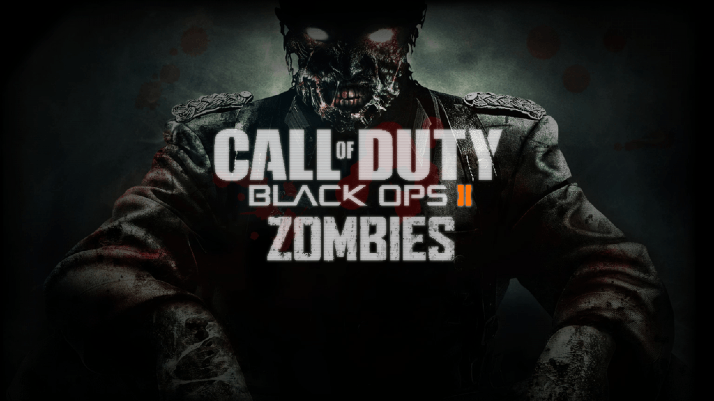
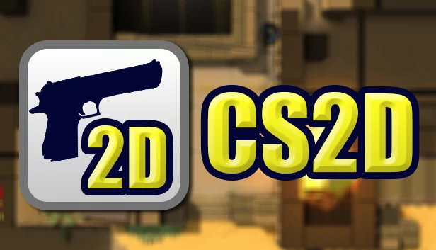
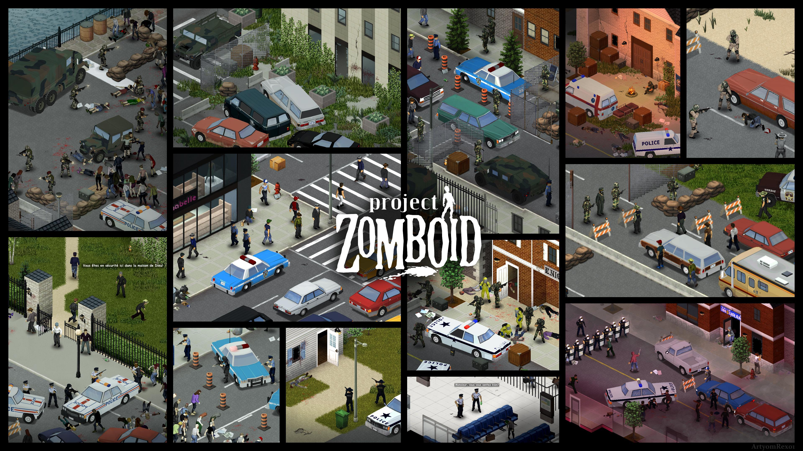

Prove a si mesmo lutando contra infinitas hordas de zumbis.
Iframe do Construct3.
Top-down shooter desenhado para testar seus limites. Atire, colete loot e não pare de se mover.
O desafio cresce com sua habilidade. Acumule o maior score possível antes de ser eliminado.
Criado na Game Engine 2D Construct3 com apenas 50 eventos.
Jogos que contribuíram para a ideia principal do FinalWave.


